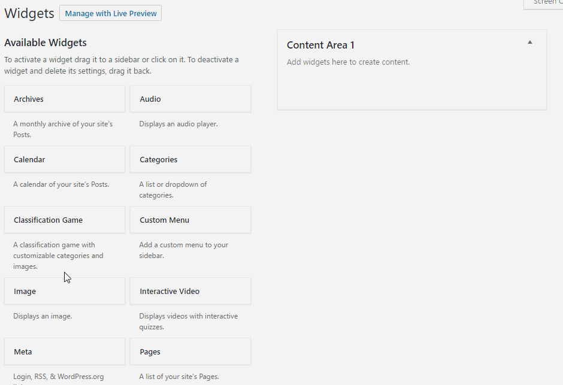

Flexible Learning Module Documentation
Introduction
Welcome to the walkthrough of the Flexible Learning Module. Here you will find information to help you get started on building your own rich content and enhance out-of-class learning.
Getting Started
You can view the current site by clicking "Visit Site" in the top left-hand corner.
You should be able to see the home screen now. Although it is currently blank, any changes you make will be visible here.
From here, there are just a couple steps to begin adding content.
Click on Learning Module > Widgets to access the widget interface.

You should now be able to see a list of widgets that are available to you. These include:
(Click on one to jump to the instructions for that widget)
Adding and Removing Widgets
Adding
To add a widget to your site, simply click and drag the widget to the content area.
Removing
To remove a widget, you can either click and drag the widget back to the list of widgets, or click the delete button at the bottom of the widget.
Widget Tutorials
Text
This widget will display any text in the input box, and can also perform basic text enhancements.
To bold or italicize text, simply hightlight the text with your cursor and click the B or the I, respectively. To insert a list, click the list icon.
You can optionally add a title at the top. Remember to click "Save" to keep your changes!
Interactive Video
The Interactive Video Widget provides a way to immediately test knowledge after being exposed to content.
You can add a title to the video by filling out the "Title" field.
To get started, click "Select Video" to add a video to the widget.

This will bring up the Add Media interface. From here, you can upload videos and pictures from your computer, which will be stored in your Wordpress Media Library. This interface can also be accessed from the left sidebar by going to the Media tab.
Keep in mind that there is a maximum file size.
Once you select a video and save the widget, you will have the option to add a quiz to the widget. This will be the place for adding interactive quizzes to your video.
Lets start by clicking "Create a Quiz".


After clicking create a quiz, you will want to choose a title for that quiz.
Once the title is chosen, all that is left is adding questions to the quiz.
To add the question, you must fill out the Question Text and at least the correct answer.
The Time field determines when the question will be displayed while the learner is watching the video. To change the time, either enter a value in the field, or drag the video player slider to the appropriate time.
You can keep add questions by clicking Add and Continue, or click Finish to stop adding questions.


Coming back to the main screen, you now have the option to edit your previous quiz, create a new quiz, or write additional text to be placed beside the video.
In order for your newly created quiz to be displayed with the video, you must activate it by selecting the quiz and clicking "Set as Active".
By checking "Additional Text", you can have the option of displaying a block of text on the left of the video to the learner.

Quiz
With the Quiz Widget, you can add a multiple choice question to any part of your learning module.
Simply fill out the Question text and as many answers as you like.
Select which answer is correct by clicking the button to the right of the answer.
Much like the Video Widget, you may display additional text on the left side of the quiz by checking Additional Text.

Classification Game
The Classification Game widget allows the learner to engage in more interactive content. The game displays randomized images, which the learner then has to drag and drop into their respective categories.
To create your own game, add a name for the categories you want.
Pick images for each category by clicking "Select Images". To select multiple images, hold down CTRL.


If you want more categories, click the blue "plus" button to add another category. Any category and its images may be deleted by clicking "Delete Category"
Click Save to keep your changes!